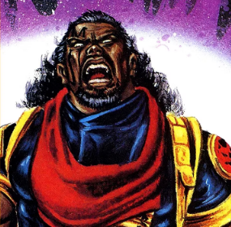

Marvels Best Unsung heroes
This site will be going over what Marvel heroes that get little to no time to shine.
Thing that wont be talked about about is:
- No Goku talk here.
- No superman talk some DC talk is allowed.
- The MCU universe.
- No talking bad about squirrle girl.
Our mission
In the vast Marvel Universe, there are numerous heroes who often don't receive the recognition they deserve.
These unsung heroes
possess incredible abilities and have made significant contributions to the
Marvel Universe, yet they tend to fly under the radar.
Let's take a look at some of these overlooked Marvel heroes.
It's quite frustrating to see how many incredible Marvel characters often go unnoticed or underappreciated. With such a vast and diverse roster of characters, it's natural that some may not receive the spotlight they deserve. Here's why it's a shame:
Rich backstories: Many lesser-known Marvel characters have incredibly rich and compelling backstories that are just waiting to be explored. From complex origins to unique powers and abilities, these characters have so much potential for engaging storytelling.
Diversity and representation: Marvel has always been committed to diversity and representation, and there are numerous characters from various backgrounds, cultures, and identities that deserve more attention. By shining a light on these characters, Marvel can further enhance the representation of different groups within their universe.
Untapped potential: Some underrated Marvel characters have untapped potential to become fan favorites if given the chance. Whether it's through compelling story arcs, team-ups with popular heroes, or well-crafted solo series, these characters could captivate audiences and add new dimensions to the Marvel universe.
Overcoming challenges: Many overlooked Marvel characters have faced unique challenges and triumphs that make for compelling storytelling. By bringing these characters to the forefront, Marvel can showcase different perspectives on heroism, resilience, and the human experience.
In conclusion, it's a missed opportunity for Marvel to not give more attention to these lesser-known characters. By exploring their stories and integrating them more prominently into the Marvel universe, the company could enrich its storytelling and appeal to an even broader audience.
